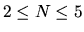

| Divide et unita |
A polyomino is a two-dimensional figure formed from several squares with adjacent sides so that all the squares of polyomino can be visited by the rook moving each turn from one square belonging to the figure to its vertical or horizontal neighbour, also belonging to the figure.
On an infinite squared paper sheet N2 squares are marked ( ) that forms a polyomino P. You should write a program that divides this polyomino into two other polyominos, A and B, wherefrom using rotations and parallel translations (mirror reflection is not allowed), it is possible to assemble a square N*N. Only one of the possible solutions should be found.
The input will contain an image of a part of the sheet that contains the polyomino P, represented by the characters '.' (dot) denoting empty spaces and '*' (asterisk) denoting squares that belong to the figure (because it is impossible to put infinite squared sheet in a file, the input file describes only part of it; all the omitted squares are considered empty). There will be no other characters in the lines of the input file. The input file will not contain lines that are longer than 100 characters and there will be no more than 100 lines. There will be always at least one solution for the given input.
Echo the image of the given part of sheet with polyomino into the output file replacing each asterisk with characters 'A' or 'B' in accordance with which of polyominos (parts), A or B, this square belongs to. The output file should contain the same lines in same order except for the above described changes.
.. ...... ....*. ..*.* ..*** ..**** ..*..* ..**** .......
.. ...... ....B. ..B.B ..BBB ..AABA ..A..A ..AAAA .......